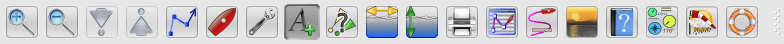
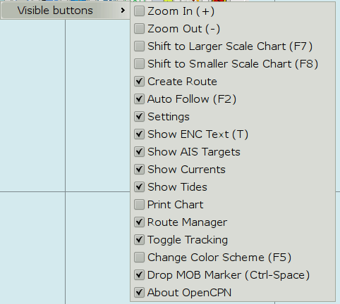
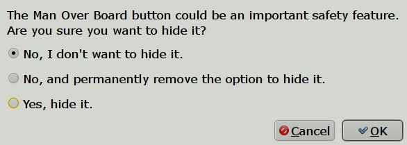
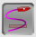
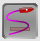
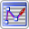
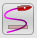
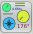
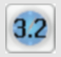

The Toolbar is floating and can be placed anywhere on the screen, vertical or horizontal. Note the “grabber” symbol at the far right side of the toolbar. Use this handle to drag the toolbar wherever you want it. The default position is horizontal and docked top left. It snaps to the edges. Right click on the grabber and a cross will appear. Left click on the cross and the toolbar shifts its orientation, to vertical or horizontal format. Right click on the cross to return to the grabber. On Windows (at least), unless in OpenGL display mode, the toolbar dims down transparently until you roll over it.
There are three different styles of Toolbars to choose from. Go to the ToolBox→“User interface”→ “Toolbar and Window Style” and select one of the following styles:
Traditional

Journeyman
Journeyman Flat
There are a lot of buttons available in the standard Toolbar, even more, counting the many plugins. To control exactly which buttons to display, hold the cursor over any button and right-click. This dialog pops up.

Only the buttons with a ticked box will be displayed. The available shortcuts are also shown in parenthesis to the right of the button description.
The MOB button is special. If unticked, you will get these choices:

#1: The MOB button will still be there, but anyone (crew?) may later hide it.
#2: If OpenCPN is used to handle a MOB situation, choose this option. The MOB button will always be there. It is not possible to change the state as long as OpenCPN is running. The MOB button option will not even appear in the right-click menu. To reset this option open the opencpn.ini(config) file and change the value below from “1” to “0”. Restart and all the options are once again available.
[Settings]...PermanentMOBIcon=1
#3: Use this option if a MOB situation is handled by other means, and OpenCPN is not a part of the standard operational MOB procedure.
If the MOB button is visible, it will always be the button furthest to the right. This way it's always easy to find in bad light etc.
The visibility of the plugin buttons is controlled in the ToolBox→Plugins Tab, by pressing the Enable/Disable toggle button.
Note that the Toolbar must have at least one active button.
When a toggle button is pressed, it changes and becomes darker, Traditional style also adds a stronger outer frame. For example, tracking off  , tracking on .
, tracking on .
A brief explanation of the use of each button is available by just hovering with the cursor over a button.

Traditional Style (from left to right) : (For translation to other styles, check the buttons just below the Traditional in the above pictures.)
 Zoom In (Zooming)
Zoom In (Zooming)
 Zoom Out (Zooming)
Zoom Out (Zooming)
 Scale Next Chart Down (Scaling Charts)1
Scale Next Chart Down (Scaling Charts)1
 Scale Next Chart Up (Scaling Charts)1
Scale Next Chart Up (Scaling Charts)1
 Create Route (Create Route)
Create Route (Create Route)
 Find/Follow Boat. Toggles on/off. (Auto Follow and Display Orientation)
Find/Follow Boat. Toggles on/off. (Auto Follow and Display Orientation)
 Launch Toolbox (Options Setting)
Launch Toolbox (Options Setting)
 Show/Hide Text Labels on Vector Chart. (Vector Display)
Show/Hide Text Labels on Vector Chart. (Vector Display)
Show/Hide AIS Targets2 (AIS)
Show/Hide Currents On Chart (Tides and Currents)
 Show/Hide Tides On Chart(Tides and Currents)
Show/Hide Tides On Chart(Tides and Currents)
Print. Prints your current view, using a simple dialog.
 Route/Track/Waypoints/Layer- Manager. (Route & Mark Manager)
 Toggle Track On/Off (Ship Track)
 About OpenCPN and Help File (Help and Getting Started)
About OpenCPN and Help File (Help and Getting Started)
 Adjust Screen Brightness for Dawn/Dusk and Night viewing. (Night Navigation)
Adjust Screen Brightness for Dawn/Dusk and Night viewing. (Night Navigation)
 Show/Hide the Dashboard Plugin (Dashboard//)
Show/Hide the Grib Overlay Plugin (Grib Weather//)
 World Magnetic Model (WMM)
 Drop Man Over Board marker (Man OverBoard) Always the far right Button.
Drop Man Over Board marker (Man OverBoard) Always the far right Button.
More Buttons may be present if certain Plugins are activated. See the Documentation for Install and Enable Plugins
A separate GPS status and Chart Orientation Status is normally in the upper right corner of the display, unless the floating ToolBar covers this position. Then the “Status-bar” will be moved to the lower left corner, were it will stay, unless the main ToolBar is moved to cover this position, in which case the “Status Bar” goes back to the default position.
Course Up/North Up2 (Display Orientation)
 GPS status2 (GPS Status)
GPS status2 (GPS Status)
1. These icons are grayed out when only CM93 vector charts are available, as the feature is not applicable to that format.
2. These icons change, depending on status.